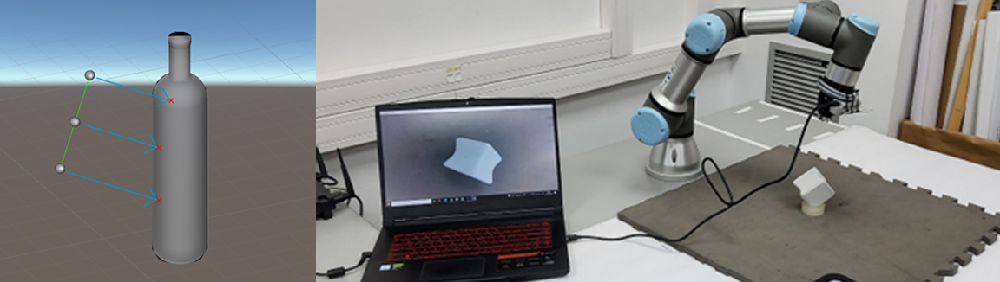

Cross-modal self-adaptative perception in cognitive robotics (CMES)

Context:
Ongoing project of the Research Group on Media Technologies at La Salle - Universitat Ramon Llull, funded by the Spanish Ministry in Science and Innovation. Here I worked as a researcher, contributing to its development, discussing results, and writing reports and publications.
Technologies:
Robotics · Perception · Haptics · Computer Vision · Machine Learning · Python · Matlab
Description:
The project explores cross-modal perception in cognitive robotic systems. We developed a haptic sensing system that uses low-level features to recognize 3D objects via machine learning models in both virtual and real-world environments. Additionally, the system integrates visual input from a camera, enabling us to study how combining haptic and visual data improves robotic perception.
My role focused on programming digital physics simulations to generate training data, and applying signal and image processing techniques to analyze it. I also contributed to the implementation of the real robot, including 3D modeling, printing, and programming. This experience allowed me to collaborate in an interdisciplinary research team composed of students, engineers, and academic researchers.
Project Website salleurl.edu/en/node/24941
Publications
Ruiz, C., de Jesús, Ò., Serrano, C., González, A., Nonell, P., Metaute, A., & Miralles, D. 2024. Bridging realities: training visuo-haptic object recognition models for robots using 3D virtual simulations. Visual Computer. 40, 7 (Jul2024), 4661-4673. https://doi.org/10.1007/s00371-024-03455-7
Gutiérrez, A., Garrofé, G., Nonell, P., Serrano, C., Parés-Morlans, C., van den Heijkant, T., Vera, M., Ruiz, C., Vidal, L., González, A., de Jesús, Ò., Ros, R., & Miralles, D. A virtual data generator system for shape recognition in haptic robotics. 2024. International Journal of Intelligent Robotics and Applications. https://doi.org/10.1007/s41315-024-00402-6
Prototype of the robot’s haptic capture system: